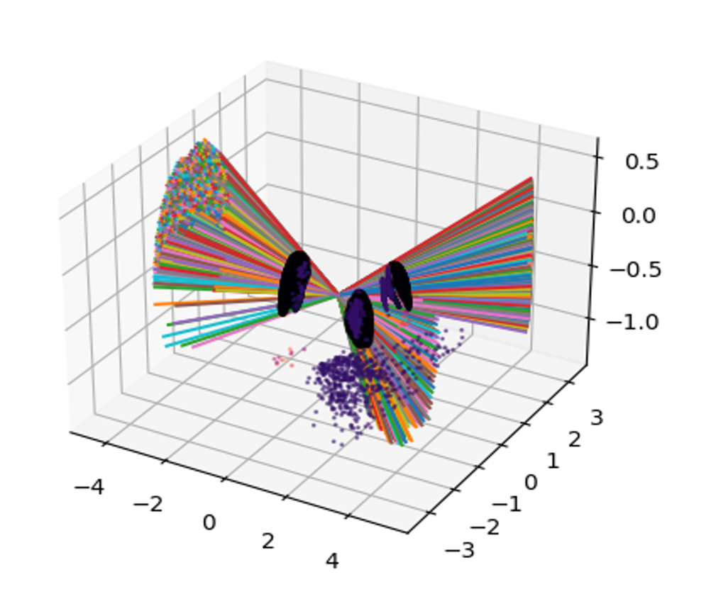
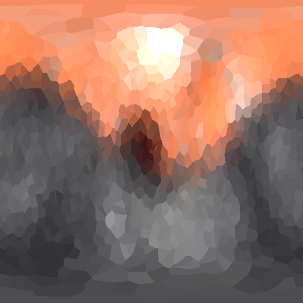
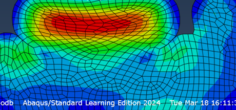
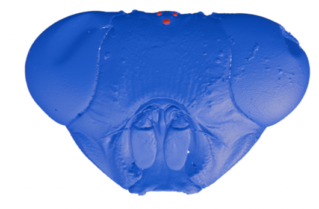

M.S. Mechanical Engineering, University of Florida

AFRL Scholar Capstone, Aug 2025. Developed a GPU-accelerated optical ray tracer in Python and C++ with CUDA to characterize 3D biological lens geometries from micro-CT scans. Implemented vectorized Snell's Law on arbitrary 3D surfaces for next-generation aerial sensor research.

BISCCITs International Conference, Jul 2025. Built a CUDA-accelerated graphical ray caster in C++ that simulates superposition vision in nocturnal insects, integrated with Blender scene files for comparative optical flow analysis across vision types.

Calibrated Mooney-Rivlin and Ogden hyperelastic material parameters from experimental stress-strain data using Python and Abaqus. Performed mesh convergence study and iterated on gasket geometry to reduce deformed gap from 2.86 mm to 0.74 mm while controlling contact pressure. Tools: Abaqus, Python, scipy.

University of Florida, 2025. Multi-year research effort developing computational tools for analyzing biological visual systems. Includes two ray-based modeling projects, the ocellar optical ray tracer and the superposition/pooling renderer.